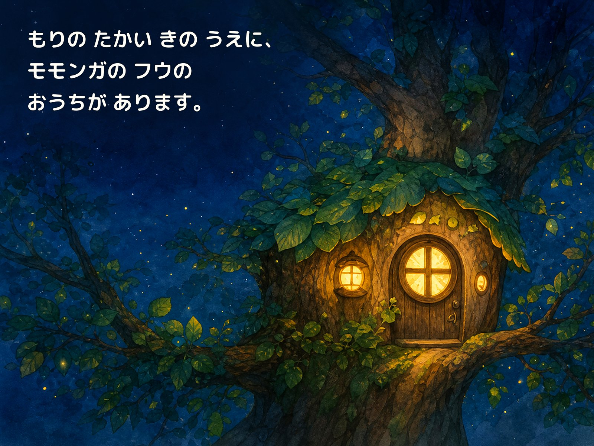

FREE READ-ALOUD
モモンガのフウ 第1巻
まよなかのあかり
落ち着いた音声で、冒頭3ページを無料でお楽しみいただけます。

0:00
0:00
音声は音声合成技術を使用して制作しています。
おためしはここまで
フウの物語は、まだ続きます。
風の音が大きくなる夜、フウはどうするのでしょう。続きはKindle版でお楽しみください。
Amazonで続きを見るCONTINUE THE STORY
3ページの続きは、Kindle版で。
こわい気持ちを抱えたフウが、小さな勇気を見つける物語です。